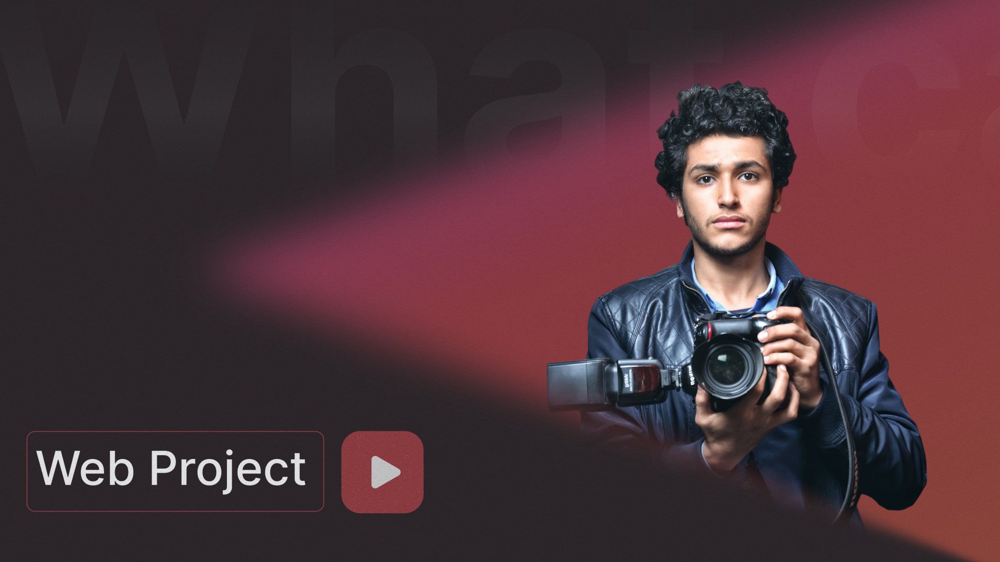

Мои работы

Сайт-Портфолио фотографа
Ссылка на проект
UI/UX Дизайнер | Создаю современные интерфейсы
Привет!
Меня зовут Патимат, и я начинающий специалист в области дизайна интерфейсов и пользовательского опыта (UI/UX). Сейчас активно развиваюсь в профессии и ищу возможности применить полученные знания на практике, став стажёром в команде профессионалов.
Мои навыки в Figma:
- Создавать компоненты, варианты и библиотеки
- Использовать AutoLayOut и Constraints
- Работать с цветом
- Работать с типографикой
- Работать с масками и изображениями
- Работать с эффектами и стилями
- Работать с фигурами
Мои навыки в Tilda:
- Работать с Zero Block
- Создавать адаптивные версии сайта для разных устройств
- Настраивать анимации и интерактивные элементы
- Работать со шрифтами и типографикой
- Собирать многостраничные сайты и лендинги
- Настраивать базовые SEO-параметры
- Использовать встроенные блоки и модифицировать их под задачи проекта
- Применять базовые HTML и CSS для кастомизации элементов
Ниже предоставлены мои учебные проекты.
